以下は考察ログであり、文法はこちらにまとめてある。
コーパスをかき集めてきたので、解読を試みよう。
語尾の情報とかを元に頑張ってみた。
語 義 品詞 同根語 Bhát バート 子音幹名詞 牌huet,藍phedu zepha 言語 母音幹名詞 牌zep1,藍chepo bháma 私たち(包括) 母音幹名詞 aṭam 神、皇帝 子音幹名詞 牌tam2,藍atam hemúl ある 動詞 牌aim2,藍aima lási 一 母音幹名詞 牌et2,藍asi ríka 二 母音幹名詞 牌ik2,藍iku dhoḷop 島 子音幹名詞 牌dop1,藍dopiai ṣibhai 国 母音幹名詞 牌sip1 ákíjam 東 子音幹名詞 牌kiak1 hem 完了の無変化動詞 無変化動詞 nána 関係代名詞 母音幹名詞 cepatepa 会話 母音幹名詞 legha 絵 母音幹名詞 牌lek1 ám 否定副詞 副詞 ká 三人称女性単数 母音幹名詞 bhoma 手 母音幹名詞 牌hop1,藍phobo bhomúl 取る、持つ 動詞 牌hop1,藍phobo káṇa 時間,時刻? 母音幹名詞 cákíkúḷ 集まる? 動詞 dhárad 連合? 子音幹名詞 hórabát 文化? 子音幹名詞 dhárad 共同体? 子音幹名詞 jó または? 助辞? sá ? 母音幹名詞 vóghit ? 子音幹名詞 cájau ? ṣóma ? 母音幹名詞 hína ? ṣíkahúḷ ? 動詞 ṣiṇṇa ? baukká ? kóli ? 母音幹名詞 aghauṭa ? 母音幹名詞 ákúḷ ? 動詞 aḍuhazóúḷ ? 動詞 há ? ko ? sujúl ? 動詞 heyáúḷ ? 動詞 ema ?
以上のを語彙集ver0と呼ぶこととする。プレーンテキストとGoogleスプレッドシートでも用意した。
まず、文字について。リパライン倉庫の表記にそぐわないやつがあるかどうか確かめる。
リパライン倉庫のに準拠するなら、ptcxkhrzmnljwbdsgyṭḍṇḷṣaiuáíúeoで書けるはずである。
-e-と-é-、-o-と-ó-は確か同一音素の表記揺れに過ぎなかったはずだから、óの登場については気にしない。
vóghitに謎のvが出てくるが、まあこれはwのことだろう。
はいOK。
不定詞語尾は-úḷのはずなのだが、PMCFショーケースの転写を見ても燐字海を見ても-úlになっている。
「実は二種類の活用がある説」とかも面白そうだが、面倒だし、単純に「面倒なので-úḷの点を打たないことがある」でよかろう。バート文字においても区別は点でなされるし。
考察が長くなったので分割。フルバージョンはこちら。以下要約。
PMCFショーケースに貼られている画像を解読したところ、デーヴァナーガリーのような「ダイアクリティカルマークで母音を表す」ではなく、母音がそれ自体で独立した字として使われていることが分かった。一方、ダイアクリティカルマークで書いている例もある。ということで、ダイアクリティカルマークで書くのを「伝統表記」、独立して表記するのを「現代表記」とすることにした。そうすればOSで実装するのも楽だし。
なるほど。
— .sozysozbot.@hsjoihs@jekto.vatimeliju (@sosoBOTpi) 2017年11月24日
1. 頑張ったけど完全には文が解読ができなかったので、単語集とかがあったら下さい
2. 文字を書いたのは誰なんだろう
1. ラネーメ祖語辞書を参照すると好い。
— Fafs/தமிழ் மாணவன் (@sashimiwiki) 2017年11月24日
2. 文字を書いたのは私ですが
ということで、ラネーメ祖語辞書を手に入れたので、解読＆転記していく。
なるほど、ákúḷは「読む」か。
cájau[後置詞]「～と共に」だそうだ。
などなどやって、暫定辞書進化版（またの名を語彙集ver1）ができた。スプレッドシートはこちら。
流石に辞書があればそれなりに読める。一部引っかかったものとか有用な情報とかを抜粋する。
ṣiṇṇa(しかし) baukká(だんだん、ゆくゆく) kóli(疲れ) -dhel(母音幹単数対格) cákík(来る 訪れる 来訪する) -akátá(指示・固有過去分詞) hem(完了の無変化動詞)
直訳するなら、「しかし、だんだん疲れを(非生物が)訪れた。」だが、これでは妙である。
DMでfafs氏と話したところ、cákík(来る 訪れる 来訪する) -akátá(指示・固有過去分詞)ではなくcákíka(訪れさせる) -kátá(指示・固有過去分詞)なのではないか、という結論になった。ということは、他動詞化語尾-aの存在が考えられる。
バート語の人称変化は主語との一致である。（fafs氏曰く、「人称変化が対格一致の言語は確か悠里に無い」とのこと。）
ということで、「〜するだろうか」が固定でzúḷ heyákáṣloであるのは、不定詞zúḷが主語となるからということのようだ。
そもそも論として、語順はSOVだったりする。パイグとかリパラインとかと違うので意識する必要あり。ただし、関係節は後置修飾である。
「Legha jó cepatepa ám hemúl ema.ってhemúḷが後置格にならなくてええんかね」と聞いたところ、「動詞不定形は名詞の曲用には従わないけど名詞節になるらしい。」となった。「emaが名詞を取る時は原則どおり後置格、不定詞を取る時は無変化、という感じかな」となった。
@sashimiwiki 「国」、ṣibhaiにします？síbhaにします？
— .sozysozbot.@hsjoihs@jekto.vatimeliju (@sosoBOTpi) 2017年11月24日
ṣibhai: Ákíjamán dhoḷopáná ṣibhaiomá dhárad
— .sozysozbot.@hsjoihs@jekto.vatimeliju (@sosoBOTpi) 2017年11月24日
síbha: Ámaom cákíkamúná síbha? ká ṣomazená káom síbhaḍi hína.
消すとめんどいので両方採用したいと思います（要するに二重語）
— .sozysozbot.@hsjoihs@jekto.vatimeliju (@sosoBOTpi) 2017年11月24日
（偶然にも）祖語辞書の例文ではṣibhaiは「国・国家」の意味でのみ、síbhaは「出身・故郷」の意味でのみ使われているので、そういう分割にします
— .sozysozbot.@hsjoihs@jekto.vatimeliju (@sosoBOTpi) 2017年11月24日
#メモ
— .sozysozbot.@hsjoihs@jekto.vatimeliju (@sosoBOTpi) 2017年11月24日
祖語辞書の「ek[助詞]らしい みたいだ」にbtと書く
#メモ
— .sozysozbot.@hsjoihs@jekto.vatimeliju (@sosoBOTpi) 2017年11月24日
nímaṣ[名詞]民族、部族 にbt
たまにバート語なのに祖語辞書でbtついてないやつがある。つらい。
@sashimiwiki Ámaom cákíkamúná síbha? 「あなたは何処の出身ですか？」における過去分詞のこの用法が謎（直接名詞を修飾できるんですかね）
— .sozysozbot.@hsjoihs@jekto.vatimeliju (@sosoBOTpi) 2017年11月24日
修飾できるのでは(分詞って言うし
— Fafs/தமிழ் மாணவன் (@sashimiwiki) 2017年11月24日
)
なるほどね（なるほどね）
— .sozysozbot.@hsjoihs@jekto.vatimeliju (@sosoBOTpi) 2017年11月24日
@sashimiwiki nímaṣáná taku 連邦 と+taku>ṣomatáku.bt[名詞]共産 集産 に出て来るtakuが分からん（そもそもバートで語頭にtが立つ例が他に無いが）
— .sozysozbot.@hsjoihs@jekto.vatimeliju (@sosoBOTpi) 2017年11月24日
takuってなんだろう
— Fafs/தமிழ் மாணவன் (@sashimiwiki) 2017年11月24日
なんだろう（理語・牌語共に発見できず）
— .sozysozbot.@hsjoihs@jekto.vatimeliju (@sosoBOTpi) 2017年11月24日
ホエール(@ransewhale)の担当言語から流れてきた何かってことにでもしようかなぁ（てきとう）
— .sozysozbot.@hsjoihs@jekto.vatimeliju (@sosoBOTpi) 2017年11月24日
ṣoma(堤 土手) +taku > ṣomatáku(共産 集産)
— .sozysozbot.@hsjoihs@jekto.vatimeliju (@sosoBOTpi) 2017年11月24日
nímaṣáná(民族たちの〜) + taku > nímaṣáná taku (連邦)
さて、なんだろう
takuってなんだろう https://t.co/lDdYw3Jjfe
— .sozysozbot.@hsjoihs@jekto.vatimeliju (@sosoBOTpi) 2017年11月24日
話は変わるが、フォントを作ってみた。
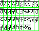 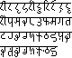現代表記はほぼアルファベットなので、このように比較的楽に作れるのである。
恒例のごとくPythonで分割し、JavaScriptで並べてやると
と、うまくいってくれるわけである。
せっかくなので、アリスでも載せてみるか。
なるほどなぁ。
1-4.でやったことも含め、軽くまとめてみる。
リパライン倉庫にあったKáṇa nána bháma cákíkadíha hem?「私たちが集まる時間は何時ですか？」を考えてみると、
káṇa(時間 時) nána(関係代名詞) bháma(一人称複数包括) cákík(来る 訪れる 来訪する) -adíha(一人称未来分詞) hem(～は～である)
káṇaが関係節の内側のcákíkuḷとどう関係するかは明示されていないことがわかる。ということで、明示しないという設定で確定としよう。
ちなみに、外側の動詞とのやりとりは先行詞が格変化することで示される。その例としてはká aghauṭadhel nána sáhomá woghit ákaze aḍuhazozená hem.「彼女は姉が読む本を見た。」がある。
ká(三人称女性単数) aghauṭa(本、図書) -dhel(母音幹単数対格) nána(関係代名詞 何) sá(女性 女) -homá(母音幹単数属格) woghit(兄弟、姉妹、同胞) ák(読む) -aze(三人称女性終止詞) aḍuhazo(見る 観測する) -zená(三人称女性過去分詞) hem(完了の無変化動詞)
となると、関係代名詞って格変化する必要がないな（あ、属格はあるかもね）。格変化しないということは名詞ではないに違いない。ということで、名詞nána「何」と関係代名詞nánaを別語判定しよう。
とりあえず全品詞を書き出して、それぞれに解説や解釈を書いていく。ちゃんと全例文が説明できるようにせねば。
よし、
káṇa(時間 時) nána(関係代名詞) bháma(一人称複数包括) cákík(来る 訪れる 来訪する) -adíha(一人称未来分詞) hem(～は～である)
以外は説明がついた。
hem、コピュラ用法があるらしいが、例文に他に見つからないので険しい。
コピュラどうしよう。とりあえずSOVについて軽く読んでみるか。
Relative clauses preceding the nouns to which they refer usually signals SOV word order, but the reverse does not hold: SOV languages feature prenominal and postnominal relative clauses roughly equally. -- Wikipedia contributors, "Subject–object–verb," Wikipedia, The Free Encyclopedia, https://en.wikipedia.org/w/index.php?title=Subject%E2%80%93object%E2%80%93verb&oldid=809535274 (accessed November 25, 2017).
あ、そうなん。SOVであっても、関係詞節が後置修飾なのは別に珍しくないのね。
fafs氏に訊いたところ、
káṇa(時間 時) nána(関係代名詞) bháma(一人称複数包括) cákík(来る 訪れる 来訪する) -adíha(一人称未来分詞) hem(完了の無変化動詞)
であって、「私たちが集まるであろうその時は何時か？」であるらしい。
コピュラの仕様については、
fafs「私の意図的には主 主 hemで省略して主 主になる」-- 悠里とFAFss #ラネーメ
ということらしいので、それでいこう。
バート語の音韻についても、ちゃんとまとまっていなかった気がするのでまとめたい。
j.v「思ってたのだが、s[z]なのにṣ[ʂ]なのって謎では？現世転写としてならともかくバート文字としては。」 fafs「たしかに」 j.v「『cに点』に変更しようかね」 fafs「s.y.に確認しておきましょ？」 j.v「ですな」 qafopwa「あー、s.になってるのか」 qafopwa「c.でええんやない？」-- 悠里とFAFss #ラネーメ
j.v「バート文字、バート語に存在するkh用の文字がないやん」 fafs「な、なんだってー！？」 j.v「ないです。そして語はあります（khak「父」）」 fafs「kに点を打つのが統一感あってよさげ」-- 悠里とFAFss #ラネーメ
ということで、音韻をまとめていたと思ったら文字を改定していた。フォントとか直さねばなぁ。
ちゃんと音韻もまとめたぞい
とりあえず、ṣとkhに対処せねばな。あと、ビットマップフォントのbhが微妙に気に入らないのでそれを直そう。
まず、過去ログを破壊しないようにすべく、古いやつを_oldというのに改名。
そして書く。
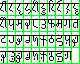 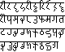「考察する」をinvestigate.htmlに改名して、index.htmlにはリンク集を貼ることにした。
これで多少はアクセスしやすくなったはずだが、まあまだまだ足らんよなぁ
1-4-8.にあるtaku問題について。
牌tak1や藍taku「服、布」と同根であって、祖語では「縫う」とかの語義も含んでおり、「流れ、繋がり」のような語義としてバート語に入ったという説になった。
ただし、これは（珍しいことに）バート語固有の単語ではなく、後世に周辺言語から借用したものだという説が濃厚となった。以下にその理由をいくつか挙げる。
なお、nuttaはファスマレー(改定試験に通過)ではnuddadだそうで、「重子音は清音のみ許容」という（通言語的にも自然っぽさある）音韻規則があると思われる。ちなみに、重子音の他の例としてはsakkáやnínaccú, accúḷ, rakkúḷなどが挙げられる。woghitについては、まあコーダならtになっても何らおかしくないでしょ。*fokjutだし。アイルでdadoである語はバートではdháradなので、別に有声阻害音を禁じてはいないっぽいが。（今の所コーダに立ってるのはlḷmntzpkṣdであり、dhárad以外は流音か無声かという風潮ではあるが、まあ主格以外は後ろに母音が来るわけだし、普通に保たれたんでしょ）
さて、takuが解決したので、ついに暫定辞書をver2にできる。
語彙集(ver2)csv 語彙集(ver2)csv Googleスプレッドシート
さて、とりあえずOTM-JSON化しますかね
しました。
特に違いは意図していないらしい。ただ、コーパス見るに一般名詞は-homáになりやすく代名詞は-omになりやすいらしい。
肯否疑問文決めてなかった。アイル語とかタカン語とかでどう言うんだろう。
とりあえず、パイグ語のA y mun1? > A yn2?に倣ってA jo ám?でいいか。
hemは鼻母音で読んで良いという話を聞いていたので、音韻メモに追記した。あと、-úḷが-úlとも書かれる話についても記載した。
例文を見ながら、細かい点を記載していく。
「アリス」のlásihomá káṇa jo ríkahomá káṇaḍi hínaを根拠に、「数詞の属格 + 名詞」で「A個のB」であることを明記。また、複数の名詞をjoで結んだときに格変化するのが後ろだけであることも分かるので、それも記載。
「感動詞」と「間投詞」を「間投詞」で統一。辞書も祖語辞書もそうした。
「高低（というか高低と強弱の中間みたいな感じだな。イントネーションですな）をどう付けるか」というのを、PMCFショーケースの動画も参考に設定してみた。作業の様子はこちらにログを残してある。
あと、母音幹単数対格の-dhelが2音節で読まれているので、そういう規則にしよう。語末の-lは[ɾə]と読むということに。あと、普通に語中のlが[ɾ]でも読まれてる気がする。
あ、-úḷが-úlとも書かれる理由ってそれか。本来の語末lは[ɾə]であって[l]ではないので、[uːɭ]と読んでも[uːl]と読んでも通じるのか、なるほど。
ならaはシュワーでは読まんだろうな。æもeっぽさあるし用例ないし不採用でいいか。
とりあえず雑に統合、古いやつはリダイレクトに。
fafs氏と話し、aに[ə]と[æ]を復活させ、wに[v]と[w]を足した。
「冠光―アイル共和国国歌」が漏れていたのでコーパスに収録した。bhán voghitináとなっている箇所をvoghitiná bhánと直してもらった。
また、表記揺れを解消した「正規化コーパス」を作成。
さらに、新たに登場した間投詞áを辞書登録。
1.4.5でsíbhaを「出身, 故郷」、ṣibhaiを「国, 国家」と分離したが、「冠光」ではsíbhaを「国」という用法で用いている。ということで、síbhaは「出身, 故郷, (我が)国」という意味の日常的な語であり、ṣibhaiは「国家」というような感じの比較的正式な語といった風にしよう。
文法書に文字の画像と情報を追加。
文法書をリパライン倉庫のページ（ミラー）の完全上位互換にしたいし、「文化情報」みたいな欄も作るか。文法書としてどうかという話は置いておいて。
まず概要欄を転記。
名前の欄もコピー。
造語とか語法考察とかやっていくよ
hemは無変化動詞なので、過去分詞や未来分詞を形成できない。ということで、「〜であった」とか言いたいときには補充形を使いそうである。さて、何が用いられるだろう、と考えたところ、パイグ語bap「同じ」の同根が使えそうだという気がしてきた。えーと祖語はbaepか。
さて、格支配どうしよう。日本語は「AがBと同じ」、韓国語は「A가 B와 같다」、英語は"A is the same as B", "A is identical to B", "A equals B"、フランス語は"A est identique à B", "A égale B" （mêmeは "A faire le même C que B" という風に使うっぽいので除外）、アラビア語はよくわからんけどとりあえず対格とるっぽい、タミル語はfafs氏曰くA மற்றும் B ஒன்றுதான்だそうで、『「～も～も」って感じ』だそうな。
まあ、通言語的に対格で取らない傾向がそこそこ強いのかもしれない（なお6言語では統計取れるほどの言語数に全くもって届いていない模様）が、égalerとか見るに対格も普通にありそうだな。
j.v「A is the same as BもA is identical to BもA equals Bもあるし、パイグに合わせればええやろ（ええやろ）」 fafs「パイグに合せすぎるなよ(系統細かくは違うんだから)」 j.v「アイル語の文法書と語法書が待ち望まれる」 j.v「タカンも」
ということで、迷った時の鉄則 †ダイスロール† を使うことにした。えーと、実質対格・hínaの2択だと思うので、1, 2, 3なら対格、4, 5, 6ならhína。
6。ということでhínaになった。さて、あとは祖語baepがどうなるか。
| 唇音 | 歯茎音 | そり舌音 | 軟口蓋音 | |||||
| 鼻音 | m | |||||||
| 破裂音 | t | d | k, kk | |||||
| gh | ||||||||
| 摩擦音 | cc | h | ||||||
| 接近音 | ||||||||
| ふるえ音 | r | |||||||
| z | j |
ということで、bhápúḷ「〜と(hína)同じである」を立てることにしよう。hemの補充形としての役割も果たすという感じで。
んー、もっと漂白してコピュラにしてもいいか。ラテン語stō「私は立つ」が後世でコピュラ化した例もあることだし。
ということで、面白いのでコピュラにしていきたいと思う。bhápúḷ「〜(hína)である」なので、例えば「かつて土手であった土地・領域」はṣomaḍi hína bhápakátá epaとかepa nána ṣomaḍi hína bhápakátáとか表せることになる。
「バート語、時間あたりの情報量密度がかなり低くないか？」と思ったので「アリス」で検証してみよう。単母音・ai・auを1、長母音を2として数えると、"alic sáhomá woghiti cájau ṣomaḍi hína ṣíkahazená hem. ṣiṇṇa, baukká kolidhel cákíkakátá hem."は53で、
アリスは川辺でおねえさんのよこにすわって、なんにもすることがないのでとても退屈しはじめていました。日本語訳（© 1999 山形浩生；クリエイティブ・コモンズ・ライセンス）
は50。ということで、「低いっちゃ低いけど日本語もそんなもんやろ」という感じか。子音クラスタもないし閉音節も限定的だし、まあそんなもんでしょ。たった1文で判断するのもアレだが。
そういえば、「〜から」って造語してないなぁ。作らねば。パイグ語でsak2だし、祖語srakkqから作ることになるのかなぁ。
と思ったら祖語にwosle「〜から」という語があるらしい。タカンではocaだそうだ。じゃあそっちから作るか。
ということで、後置詞oṣa「〜から」を造語。
祖語dradqngを見てみると、
dradqng 集団、団体 dado.ar[名詞]集まり drad>dat2.pk[名詞][動詞]集まり、集団、団体、集まる、集める >dhárad.bt[名詞]連合、連邦、党 dad ng.fs[名詞]集まり、集団、団体 tadu.tk[名詞]集まり、集団、団体
となっていて、-ngの根拠は改定前ファスマレーのdad ngしかない。改定前ファスマレーは滅ぼすことになったので、必然的に-ngの根拠もなくなり、祖語はdradqだったということになった。
造語とか語法考察とかやっていくよpart2
祖語辞書の記載が「ema[後置詞]～のような ～のように (動詞不定形に続いて)～なんて」となっていたので、辞書も修正。
さて、「～のような」って書いてあるけど、「AのようなB」ってどう言うんだろうね。連体修飾って属格と関係詞節と分詞しかないけど。
「AのようなB」ってなんだろう。パイグ語「如」に対応するわけだから比況がメインだろうけど。
「Aに似たB」かなぁ。「火のような色」とか「宝石箱のような景色」とか「子供のような振る舞い」とか。
「AのBに似たB」（「火の色に似た色」「子供の振る舞いに似た振る舞い」）パターンと、「Aそのものに比喩的に似たB」（「宝石箱のような景色」）パターンがあるな。比況と例示の違いなのか？（わかっていない）
「子供のような振る舞い」は「子供のように振る舞う」の名詞化として捉えられるから、emaの意味範囲に収まりそうだよなぁ。「子供のように描く」＝「子供が描くように描く」はghátuḍi ema leghúḷだが、「子供のような絵」はどうするか。「子供の描いたような絵」をそのまま訳せばghátuḍi ema leghadína/leghamúná/leghazená/leghabáta leghaと冗長である。まあ代動詞を使えばghátuḍi ema zadína/zamúná/zazená/zabáta leghaと、人称変化がある言語なので過去分詞を使うと作者を特定することになってしまう。
目の前に「子供のような絵」があってもその作者は明らかとは限らないわけで、もっと動作主を漂白した表現が必要である。
別の方面で考えてみよう。
パイグなら「彼は子供のように描く」が「彼如子筆絵」で「子供のような絵」が「如子絵」とか「如子之絵」とかだろう。「タカンのような人」を「如takan」と書いている用例もあるなぁ。とはいえ、「如子之絵」を*ghátuḍi emahomá leghaみたいするのもアレだし。
となると、普通に「AはBに似ている・AはまるでBのようである」（Bは対格）という動詞を立てるのが無難な気がしてきた。なんか使えるのないかなーと思ったら牌cei2,藍ceixei「近」が使えそうだということになった。
ラネーメ祖語に再構されていないので、古パイグsreiを基準にしよう。
s.yと話し合ったところ、祖語形はcrqiでよかろうということになった。その過程で参考にした要素は以下の通り。
さてこれがバートでどうなることやら。動詞なので-úḷがつくことを考えると、*sui > sujúḷから類推するに-júḷなのは確定だろう。末尾でない*qはaになりやすい(*qtaa > adha、*pqra > bhára、*sipql > síbha, ṣibhai）のでaかáかだな、さてどうしよう。
ダイスロールするか。奇数ならa、偶数ならá。3。ということで-ajúḷ。
cr-については、*dradq > dhárad、*srakkq > cákíkúḷから考えるに、c-でいいだろう。
ということで、cajúḷ「AはBに似ている・AはまるでBのようである」を立てよう。さて、対格かhínaか。原義「近い」ならhínaだろ。よし決定。
ついでに、「「「助詞」」」ek「〜らしい, 〜みたいだ」について考えるか。同根語はパイグ「光」とかだなぁ。例文では伝聞で使ってるけど、これって果たして伝聞・推定でしか使えないんだろうか。日本語の語釈だと比況ともとれてしまうが、それだとemaと被るからなぁ。そもそもこの「助詞」ってなんなんだ「助詞」って。まあ終助詞「かしら」みたいなもんと考えればそこまで無理なネーミングではないかもだが。
しかし、文末でしか使えないのかね。「難しいと聞く手術」みたいな言い方ができたら便利ではあるが、まあそういうの表現するのには別の表現を使いそうだなぁ
祖語辞書を「助詞」から「終助詞」に変更、辞書と文法書も変更。
「冠光」足したときに言及し忘れていたが、歌などの場合は動詞の後に名詞が来たり格語尾が落とされたりすることがあることを文法書に書いておこう。格がしっかりしている言語で格語尾が落とせるというのも一見不思議な話だが、まあラネーメですしおすし。
というかṣomaúḷって敬礼の対象を具格に取るのか、謎だ（謎だ）
まあ日本語の「〜である」の「〜で」も形態上具格っぽく見えたりするかもしれないし、そんなもんでしょ（？）
調べてみたらロシア語の具格の用法が思いの外広かった。うむ、全く問題なさそうだな。
文法書の「イントネーション」で出てくる文節が2つの単語から構成されるのは「名詞後置格+後置詞」「不定詞+後置詞」「名詞主格+接続詞」だが、ここでいう接続詞は文と文を繋ぐṣiṇṇa(しかし)などではなく名詞と名詞を繋ぐjo(または)などである。
もしかするとṣiṇṇaに名詞と名詞を繋ぐ用法があったりするかもしれないが、そうでないなら品詞の名前は分離したい。
「文接続詞」vs.「名詞接続詞」でいいか。
長くなったし、アドベントカレンダーの記事にもしたいので分離。
まとめた表がこちら。
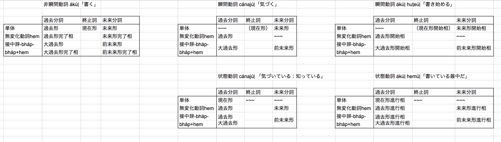造語とか語法考察とかやっていくよpart3
ないですね。パイグとかは「此」で言えるんだろうけど。（あれ、辞書に載ってない。足しとかねば）
j.v「代名詞も考えたんだけど、『彼(かれ)の時』と『この時』って別物な気がするんよ」 fafs「なるほどなぁ。…いや、でも『彼(か)の時』と読めば」 j.v「それは思ったけど、人称変化を変える民族なわけだし分かれそうな気が。ということで日本語の連体詞・韓国語の冠形詞と同様の『形容詞』判定にしたい」-- Skype通話
と思ったら、パイグ「此」と同根なのはバートではko「これ」だから人称は問題ないやん。
あ、そうだ、ko -omの縮約でkomとして形容詞として辞書に載せよう。「これの」はkohomáですな。
ghが[ɡʱ]じゃなくて[ɣ]になってしまう傾向があるので、異音として許容することにした。
辞書にある動詞を「動作動詞」「瞬間動詞」「状態動詞」に分けていこう。「瞬間動詞」「状態動詞」にする場合は例文と要相談。
| 単語 | 語義 | 判定 |
| accúḷ | 書く | 動作動詞 |
| aḍuhazoúḷ | 見る, 観測する | 動作動詞 |
| ákúḷ | 読む | 動作動詞 |
| bhárúḷ | 風が吹く、感染症にかかる、風邪になる、病気になる、カビが生える | 瞬間動詞[0][1] |
| bhátúḷ | ～を話す、喋る | 動作動詞[2] |
| bhomúḷ | 取る、持つ | 瞬間動詞[0][3] |
| bohúḷ | 行く | 動作動詞 |
| 去る | 瞬間動詞[3][4] | |
| cákíkaúḷ | 〜を訪れさせる | 動作動詞 |
| cákíkúḷ | 来る、訪れる、来訪する | 動作動詞 |
| 〜(oṣa)が出身地である | 状態動詞[5] | |
| hemúḷ | ある、存在する | 状態動詞[6] |
| horúḷ | 書く、記録する | 動作動詞 |
| kádúḷ | 光る、目立つ、〜が分かる | 瞬間動詞[0] |
| leghúḷ | 絵を描く | 動作動詞 |
| rakkúḷ | 生きる、生存する | 状態動詞[7] |
| ṣíkahúḷ | 座る | 瞬間動詞[0][8] |
| ṣomaúḷ | 〜(具格)に対して敬礼する | 動作動詞 |
| ṣomúḷ | 積む、積み上げる、功績を上げる、結果を出す | 動作動詞 |
| sujúḷ | 使う、利用する | 動作動詞 |
| suúḷ | 商う、商売をする | 状態動詞[9] |
| zeúḷ | 巻く、回す | 動作動詞 |
| zúḷ | する、行なう | 動作動詞 |
| bhápúḷ | 〜(hína)である | 状態動詞 |
| cajúḷ | 〜(hína)に似ている・まるで〜(hína)のようである | 状態動詞 |
さて、ここまではいい。残るはheyáúḷ「思う、(動詞節を取ってheyákáṣlo)～だろうか」である。例文を見てみるか。
後者は動作動詞の過去形完了相でいいでしょ。ちなみにユーゴック語は現在時制完了相らしい。まあバート語にそんなものはない。さて、問題は前者である。
単純にして、kodhel sujúḷ heyákáṣlo.「これを使うだろう。」を考えよう。逐語訳すると、「これを使うことがheyáúḷするだろう。」うーん。
考えたが、良い案が思いつかないので、単純に「動詞」とすることにした。だって未来形でしか使わないもん。
さて、これで終わり…と思ったが、前に造語したhuṭeúḷ「始まる」とcánajúḷ「気づく、知る；気づいている、知っている」を辞書に足さねば。「始まる」と「気づく、知る」はは瞬間動詞、「気づいている、知っている」は状態動詞。
造語されていないなぁ。というかthis/thatなのか「これ」「それ」「あれ」なのかも考えなきゃ。
タカンは3つらしい、じゃあバートも3つでしょ。
| 意味 | パイグ | タカン | アイル | バート |
| これ | ka1 | ka | ko | |
| それ | ze1 | ti | tisi | |
| あれ | zap2 | ki | kisi | |
| どれ | nan2 | cu | susi | nána |
タカンでiになるやつってバートだとどうなんだろう。アイルのinusiがタカンでinuci、パイグでnut2だったりするそうな。アイルnimutu、タカンnicu、パイグnim2、バートnímaṣというパターンも。
考えるのが面倒になってきたので、tíとkíで確定させてしまえ。
kíは「彼」に衝突するなぁ。まあいいか。人称変化するから人なのか物なのか分かるし。
複数形どうしよう。「彼」の場合は複数はkíṣloだけど、「あれ」の場合はkízáになったりするのだろうか？
逆に、koやtíがkoṣloやtíṣloとなるという説も面白そうだな。
よし、ダイスロール！
2が出た。ということで、規則複数で行きましょう。
あ、そういえば「彼ら」ってkíṣloじゃなくてkiṣloなのか、知らなかった。
-báṣlo, -káṣloがóになっていたのを修正。
時制のところを執筆。
そり舌音の後のiは当然[ɨ]なのでそれを加筆。
jekto.vatimelijuの「アリス」暗記チャレンジというのをやってみた。気づいたことを幾つかメモっておこう。
ツイートにも書いたが、語末のaとáの区別があやふやすぎるのでちゃんと覚えなくてはいけない。
「彼女の姉」なのにkáhomáじゃなくてsáhomá「女の姉」なのな。もしかしてこれって「女兄弟」の意図だったのだろうか？fafs氏に確認してみないとな。
「ká ṣomazená káom síbhaḍi hína. 彼女は彼女の故郷で功績を上げた。」とかがあるのでkáomやkáhomáとは普通に言えるっぽいしなぁ。
「女兄弟」の意図なら、属格の用法についても考えないといけない。
主格・対格とかの方が後置格+後置詞より前に出る傾向があるっぽいですね。書いとこう。
「aghauṭadhel nána sáhomá woghit ákaze aḍuhazozená hem. 姉が読んでいる本を見た」という部分から見るに、関係節の時制は「事象の起こったときから見た時制」で書くのだなぁ。aḍuhazozená hemが起こっているタイミングではákúḷという動作が行われているので終止詞が使える。
| 原文 | 翻訳 | 備考 |
| So | tíḍi 〜を原因として | 「そのため」 |
| she was considering | ká heyáúḷ hemakátá hem | 不定詞は非生物なので-kátáであることに注意 |
| in her own mind | káom 心ḍi hína | 「中」は訳出不要と判断 |
| (as well as she could, | ṣiṇṇa kom 思考ḍi hína 限界 hemakátá hem. | 訳しづらいので「しかしこの思考には限界があった」と言い換え |
| for the hot day made her feel very sleepy and stupid) | káom amáma 眠さ と 愚かさḍi nána 暑さ cákíkaká 〜を原因として | 前述の言い換えに合わせ、「暑さがもたらす彼女の大きな眠さと愚かさのせいで」と表現。原文で地の文もmadeも共に過去形であることから、終止詞で訳す。名詞接続詞の前の格語尾は落ちることにも注意 |
| (considering) whether A would be worth B | A B-dhel 勝るúḷ jo ám ema (heyáúḷ) | 肯否疑問文「V jo ám?」を直に埋め込んで肯否間接疑問文。heyáúḷの意味上の目的語は（第一段落にあったように）emaで受けるので、「勝る」を不定詞にしてemaをつける |
| the pleasure of making a daisy-chain | 楽しみ nána 花homá 鎖dhel 作るzebá | 思考の時点では花の鎖を作る動作が開始していないので未来分詞。「花dhel 鎖ghi 変えるzebá」でもいいかもな |
| the trouble of getting up and picking the daisies | 面倒dhel nána 起き上がるzebá そしてその後 花dhel 摘むzebá | 分詞は名詞ではないので名詞接続詞「〜と」では結べないことに注意。前行と同様の理由で未来分詞 |
| (was considering, ) when | tíom káṇaḍi hína | 長過ぎる1文を嫌うので、一旦文を切って「その時、」と続ける |
| suddenly | 突然 | 副詞ってどう造語しような。用言で用言を修飾する表現を組み込んでそれで言うという手もあるが |
| a White Rabbit with pink eyes | ピンクいkátá adhadhel bhomakátá 白いkátá 兎 | sáhomá woghitiが性質属格であるという結論が出た場合は、「ピンクhomá」でもアリだな。原文では固有名詞扱いだが、ここで人名接尾辞を使うのも違う気がするので一般名詞として翻訳 |
| ran close by her | kábhau 〜の近くḍi hína 走るkátá. |
動詞にすることも考えたが、「kábhau(なんか具格の気分だった) 〜に場所的に近いbhápakátá epaḍi hína」は流石に冗長と判断。で、せっかくなので「Aの上」「Aの近く」とかは属格ではなく具格を取るということにした。韓国語だと無格縛りになってたりするし、属格じゃなくてもいい気が…と思ったが、現状の規則だと具格って動詞しか修飾できないのか。よかろう、規則追加だ。 今見てきたら「そもそも具格が何を修飾するか」すら書いてなかったな |
結果：
tíḍi 〜を原因として 楽しみ nána 花homá 鎖dhel 作るzebá 面倒dhel nána 起き上がるzebá そしてその後 花dhel 摘むzebá 勝るúḷ jo ám ema ká káom 心ḍi hína heyáúḷ hemakátá hem, ṣiṇṇa káom amáma 眠さ と 愚かさḍi nána 暑さ cákíkaká 〜を原因として kom 思考ḍi hína 限界 hemakátá hem. tíom káṇaḍi hína 突然 kábhau 〜近くḍi hína ピンクいkátá adhadhel bhomakátá 白いkátá 兎 走るkátá.
造語は後でやるが、辞書に加筆した部分についてメモ
しかし、hínaの頻度本当に高いなぁ、これ本当に毎回わざわざ[xi:na]って言っているんだろうか。というか、今は単数だからまだしも、複数だと-iná hínaとか-dhíná hínáとかになるぞ、流石にアレでは。
うーむ、普通に日常会話だと縮約されそうだな。考えてみるか
-(a)dínaは一人称過去分詞と衝突するっちゃするが、使用状況も違うし衝突してもおかしくないよなぁ
よし、「複数の場合は縮約は義務、単数の場合は縮約は口語的」としよう。今までの例文では単数しか出てきていないので問題ない。
tは語頭に立ちませんが。修正の対象ですね。diにしましょう。
| 原文 | 翻訳 | 備考 |
| There was nothing so VERY remarkable | とても とても 珍しいakátá ものたち ám hemakátá hem | 強調は畳語 |
| in that | koḍi hína | hemúḷなので当然hína |
| ; nor did Alice think it so VERY much out of the way | そして, alic ám とても とても 不思議に思うzená hem. | 「不思議に思う」は一語ということにする |
| to hear the Rabbit say to itself, "A" | 兎 自身ḍi ghi bhátúḷ, "A", kodhel ká 聞くúḷ ema | 「〜に対して話す」といった、対象が目標になるような動作はhínaよりもghiで受けるってことにしたい。「花dhel 鎖ghi 変えるzebá」もそれ。最後のemaは「不思議に思う」の意味上の目的語。不定詞は格変化できないので、不定詞を対格にしたいときには一旦-úḷと書いてからこれをkodhelで受けることにしよう。 |
| `Oh dear! Oh dear! I shall be late!’ | há káṇa! há káṇa! 遅刻であるdíha hem! | 文脈と人称変化で分かるのでápa訳出不要。状態動詞の未来形なのでhemは義務。時間に追われているときにバート人は「おお時間よ！」と言うらしい。 |
| when she thought it over afterwards, | 後homá káṇaḍi nána koḍi ema 再び heyáze hína, | 関係節なので相対時制。日本語につられて過去時制にしないよう注意。 |
| it occurred to her that she ought to have wondered at this | 事実dhel nána ká kodhel 不思議に思うúḷ 〜べきであるbhápakátá hem ká cánajazená hem. | 時制をしっかり追いかけよう。「彼女は過去(時刻C)にある事実に気づいた(瞬間動詞過去形)」で、関係節なので中身は「時刻Cが現在」という視点。時刻Aに「喋る兎に遭遇する」という事象があったので、時刻Bに『これを不思議に思うべきである』という状態にあり、しかしそのことを現在時刻Cに気づいた、という構造。これは「過去の特定の時点(時刻B)より昔(時刻A)に『〜する』の点があった結果、過去の時点(時刻B)で『〜である』の点にいた」の構造なので、語幹-bháp-過去分詞語尾 (+hem任意)である。関係節の終わりを明言するのに便利なので、意味上は要求されないhemを書いている。 「〜べきである」をどういう扱いにするかというのはこれから考える。 |
| but at the time it all seemed quite natural | ṣiṇṇa, díom káṇaḍi hína ká dízá 全て とても 自然であるúḷ ema heyázená hem. | díom káṇaḍi hínaは「時刻Bに於いては」であることに留意すると、「当時は〜と考えていた」というだけなので過去分詞+hemで十分。これを語幹-bháp-過去分詞語尾 + hemにしてしまうと
「しかしながら、その時に於いては彼女はそれらを全てquite naturalであると、当時から考え終わっていた経験があった。」となってしまって合わない。 なお、こことかalic koḍi ema heyázená hem.とかにhemがついているのは、hemをつけないと「考える作業の最中であった」になるからである。ただ、そこまで考えなくとも、物語を語るときはだいたいhemをつけておけばいいというのもあって、実際第二段落最後の「走るkátá.」（consideringしている最中に走りという行為が突然入ってきているのだからhemは不適）以外は文末にhemがついている。 |
結果：
koḍi hína とても とても 珍しいakátá ものたち ám hemakátá hem. そして, 兎 自身ḍi ghi bhátúḷ, "há káṇa! há káṇa! 遅刻であるdíha hem!", kodhel ká 聞くúḷ ema alic ám とても とても 不思議に思うzená hem. 後homá káṇaḍi nána koḍi ema 再び heyáze hína, 事実dhel nána ká kodhel 不思議に思うúḷ 〜べきであるbhápakátá hem ká cánajazená hem. ṣiṇṇa, díom káṇaḍi hína ká dízá 全て とても 自然であるúḷ ema heyázená hem.
| 原文 | 翻訳 | 備考 |
| but when the Rabbit actually TOOK A WATCH OUT OF ITS WAISTCOAT- POCKET, and looked at it, and then hurried on, | ṣiṇṇa, káṇaḍi nána 兎 なんとまあ 時計dhel díom チョッキhomá ポケットḍi oṣa 取り出すká, そしてその後 kodhel ákaká, そしてその後 走るká hína, | 関係節は相対時制 |
| Alice started to her feet, | alic 立ち上がるzená hem, | |
| for it flashed across her mind that she had never before seen a rabbit with either a waistcoat-pocket, or a watch to take out of it | チョッキhomá ポケット jo 時計dhel nána kom epaḍi oṣa 取り出すká bhomakátá 兎dhel ká ám aḍuhazobhápazena 事実dhel 突然 cánajúḷ 〜を原因として. | また時制地獄である。「〜という事実に突然気づいた(@時刻C)ということを原因として」だと地獄が深いので、「〜という事実への突然の気づきを原因として」と不定詞で対処。「チョッキのポケット、またはこの場所(=チョッキのポケット)から取り出す(関係詞なので終止詞)時計を持っている(状態動詞現在形)兎を彼女は「過去の特定の時点以前に見た結果、過去の段階で見た経験を持っていた(動作動詞大過去)」ではなかった(=見たことがなかった)という事実への突然の気付きを原因として。」 |
| and burning with curiosity, | そしてその後 amáma 好奇心ḍi cájau | 時制がこわいので動詞はできるだけ避けよう |
| she ran across the field after it, | ||
| and fortunately was just in time to see it pop down a large rabbit-hole under the hedge. |
sáhomá woghitはやはり「女兄弟」の意図なのかもしれない、ということになった。
さて、私が「アリス」を読む時に（大文字＝高い）Alic sáhomÁ woghiti cájAUではなくAlic sáhomá woghiti cájAUと読む習慣がついてきた。lásihomá káṇa jo ríkahomá káṇaḍi hína は依然として lásIhomÁ káṇa jO ríkAhomÁ káṇaḍi hínA なので、性質属格の場合は例えばsáhomá woghit全体で1文節という仕様にしよう。日本語の「男の子(Votokáwnokaw)」[a boy] vs. 「男の子(Votokaw-no Kaw)」[a man's child]みたいな感じですな。
バート語は比較的開音節優勢の言語であるが、タカン語ほど開音節縛りが厳しいわけではない。具体的にどのような閉音節が出てくるか見てみよう。バートぐらいなら全列挙できるなぁ
ふーむ。-nt-とかすら無いのか。
さて、となると、バート語での閉音節に関しては「子音幹名詞の主格」と、あと「動詞の命令形」を考えていけばよい。
19-1.に書いた「úḷの前に来る音一覧」を（bhápúḷを追加して）掲載すると
| 唇音 | 歯茎音 | そり舌音 | 軟口蓋音 | |||||
| 鼻音 | m | |||||||
| 破裂音 | p | t | d | k, kk | ||||
| gh | ||||||||
| 摩擦音 | cc | h | ||||||
| 接近音 | ||||||||
| ふるえ音 | r | |||||||
| z | j |
子音幹名詞の語末に来ている子音でこの表に載っていないのはnとṣだけである。逆に、子音幹名詞の語末にあるのは
| 唇音 | 歯茎音 | そり舌音 | 軟口蓋音 | |||||
| 鼻音 | m | n | ||||||
| 破裂音 | p | t | d | k | ||||
| 摩擦音 | ṣ | |||||||
| 接近音 | ||||||||
| ふるえ音 | ||||||||
| z |
である。
あとは命令形を解決していけばいい。とはいえ、まあまあ案件あるんよね
さて、accúḷとかrakkúḷとかの命令形はどうしようか。
fafs氏と話した結果、「/assə/や/rakkə/と発音するけどaccやrakkと表記する」ということで良さそう、となった。
しかし、よく考えてみると、バート文字で書いた場合はaを消すほうが手間だったりするわけだ。
ということで、「accやrakkと表記するのが規範だが、発音と一致しないこともあり、あまり守られない」という仕様にする。
fafs「言語って感じだ」 j.v「わかる」 fafs「言語になってきたなぁ」
cánajúḷ /saːnajuːɭ/ の命令形 /saːnai̯ ~ saːnɛː/ は#アンケート #bhaataan
— .sozysozbot.@hsjoihs@jekto.vatimeliju (@sosoBOTpi) 2017年12月20日
fafs「jって音節末に来ないっぽさあるし、cánajúḷの命令形はcánaiにしたさある」 j.v「問題はsujúḷの命令形なわけだが」 fafs「あー、どうしようなぁ」
子音幹名詞で-jで終わるのがあったりするんだろうか。あった場合、後置格-iがついた場合はどうなるのかという問題があるが、それなら母音幹は-ai、子音幹は-ajと書いたほうが合理的ではある。別に合理的である必要はないが。
とりあえず、
個人的には、音声面では語末に/j/（とか/y/）は立たない気がしていて、しかし正書法でそれをどう表現するかは非自明かなぁ、という感じ。
fafs「sujは気持ちわるいと思います」 j.v「わかる。じゃあどうなんだろう」 fafs「suja…はなんかイヤだなぁ」 j.v「なんかなぁ」 fafs「su…もなぁ」 j.v「suúḷと衝突するからなぁ」
などなど、なかなか結論が出なかったが、ラネーメ祖語の命令語尾*-zeに二人称も-mú-が融合した接尾辞-´zemを使うことになった。
fafs「*-ze+-mú~ -> -zem sujúl(Vj形動詞) -> súzem」 fafs「Vj形動詞 -Vj -> 語幹動詞を長音化し、-zemを付ける。 Aj形動詞 -aj -> -ai（？） 一般動詞 úḷを除くだけ」
cánajúḷについては、発音は/saːnai̯ ~ saːnɛː/であって、綴りについてはいつもの「標準的な綴りとしては規則を重んじてcánajと書くが、音声に合わせたcánaiという表記も比較的見られる」ということにしよう。
祖語辞書には完了連用接続-kjq-と非完了連用形接続-mq-がある。今のところ採用している言語はないが、ちょうどバート語に用言で用言を修飾する表現が欠けているし、採用してみようかなぁ
ということを結構前から思っていたが、acrossを訳すのに使えそうなので採用を考えて行きたい。
問題は、時制を導入するかどうかである。ダイスロールですな。偶数なら導入。
4。導入！（通話にあふれる哀しみの声）（時制地獄は終わらない）（「大丈夫、その苦しみをきっとタカン語が和らげてくれるはず」）
さて考えていきましょう。人称は流石に要らない。
時制があるということなので、完了連用接続と非完了連用形接続をそのまま継承すればよかろう。
祖語fokjutがwoghitだし-kjq-も-ki-…うーん、語中だし-ghi-かもなぁ。-mq-は-ma-でよかろう。
なんか後ろにつける必要あるかな、無いよね。
ということで、-(a)ghiで「〜し終わって」、-(a)maで「〜しながら」ですかな。
| 原文 | 翻訳 | 備考 |
| she ran across the field after it, | 野dhel 横切るma 走るma ká dídhel 追うzená hem. | さっそく-maである。「兎を追いかけて走った」がちょっと言いづらいので「兎は走って追った」と表現。 |
| and fortunately | そしてその後 幸運ḍi cájau | 「幸運を伴って」。cájauは便利。 |
| was just in time to see it pop down a large rabbit-hole under the hedge. | káṇaḍi nána 兎 垣根bhau 下homá amáma 巣穴ḍi ghi 跳ねるma 入るká hína 折よく kodhel aḍuhazozená hem | 「垣根の下」は基準具格。「下ḍi hína hemakátá 巣穴」は冗長なので性質属格で「下homá 巣穴」だが、amámaが挿入されているので文節は分断される。飛び込む対象・目標なのでghi。「ちょうど間に合った」が訳しにくいので「〜する時間においてちょうど此を見た。」と。 |
よーし終わった。後は造語だ
上記の「兎 自身ḍi ghi bhátúḷ, "A", kodhel ká 聞くúḷ ema」で出てきたが、不定詞は格変化できないので、主格と後置格以外の場合は直後にkoを置いてそれを格変化させることとする。
別に用言が後ろに連なる形というわけではなく、あくまで副詞節を作るための表現なので、「連用」という呼び方ではなく「状況副詞化語尾」と呼ぶことにしよう。
子音で語幹が終わるときにaが挿入されることが記載されていなかったので記載。
suddenlyの翻訳のところで「副詞ってどう造語しような。用言で用言を修飾する表現を組み込んでそれで言うという手もあるが」と書いてあるが、状況副詞化語尾が導入されたしそれを使うかなぁ
最終確認である。まずは翻訳
alic sáhomá woghiti cájau ṣomaḍi hína ṣíkahazená hem. ṣiṇṇa, baukká kolidhel cákíkakátá hem. lásihomá káṇa jo ríkahomá káṇaḍi hína ká aghauṭadhel nána sáhomá woghit ákaze aḍuhazozená hem. ṣiṇṇa, legha jo cepatepa aghauṭaḍi hína ám hemakátá hem. "há, kodhel nánaḍi hína sujúḷ heyákáṣlo?" alic koḍi ema heyázená hem. "legha jo cepatepa ám hemúḷ ema."
díḍi 〜を原因として 楽しみ nána 花homá 鎖dhel 作るzebá 面倒dhel nána 起き上がるzebá そしてその後 花dhel 摘むzebá 勝るúḷ jo ám ema ká káom 心ḍi hína heyáúḷ hemakátá hem, ṣiṇṇa káom amáma 眠さ と 愚かさḍi nána 暑さ cákíkaká 〜を原因として kom 思考ḍi hína 限界 hemakátá hem. díom káṇaḍi hína 突然 kábhau 〜近くḍi hína ピンクhomá adhadhel bhomakátá 白いkátá 兎 走るkátá.
koḍi hína とても とても 珍しいakátá 出来事たち ám hemakátá hem. そして, 兎 自身ḍi ghi bhátúḷ, "há káṇa! há káṇa! 遅刻であるdíha hem!", kodhel ká 聞くúḷ ema alic ám とても とても 不思議に思うzená hem. 時間的な後homá káṇaḍi nána koḍi ema 再び heyáze hína, 事実dhel nána ká kodhel 不思議に思うúḷ 〜べきであるbhápakátá hem ká cánajazená hem, ṣiṇṇa, díom káṇaḍi hína ká dízá 全て とても 自然であるúḷ ema heyázená hem. ṣiṇṇa, káṇaḍi nána 兎 なんとまあ 時計dhel díom チョッキhomá ポケットḍi oṣa 取り出すká, そしてその後 kodhel ákaká, そしてその後 走るká hína, alic 立ち上がるzená hem, チョッキhomá ポケット jo 時計dhel nána kom epaḍi oṣa 取り出すká bhomakátá 兎dhel ká ám aḍuhazobhápazena 事実dhel 突然 cánajúḷ 〜を原因として. そしてその後 amáma 好奇心ḍi cájau 野dhel 横切るma 走るma ká dídhel 追うzená hem. そしてその後 幸運ḍi cájau káṇaḍi nána 兎 垣根bhau 下homá amáma 巣穴ḍi ghi 跳ねるma 入るká hína 折よく kodhel aḍuhazozená hem.
「花homá 鎖dhel 作るzebá」、この用法で属格を使うのか？とも思ったがamilahomá nuttaがあるし問題はなさそう。でも「kodhel díḍi ghi 変える」もついでに造語しておこう。
「but at the time it all seemed quite natural」の部分はピリオドからコンマに変更。直後の「but when the Rabbit actually 〜」と競合しないようにするためである。
「珍しいakátá ものたち」を「珍しいakátá 出来事たち」に変更。
そして造語予定リスト。
【後置詞】〜を原因として 【名詞】楽しみ --【状態動詞】楽しい 【名詞】花 【名詞】鎖 【動作動詞】〜（対格）を作る 【名詞】面倒 -- 【状態動詞】面倒だ 【動作動詞】起き上がる 【文接続詞】そしてその後 【動作動詞】(花を)摘む 【状態動詞】〜(対格)に勝る 【名詞】心 【名詞】眠さ -- 【状態動詞】眠い 【名詞接続詞】と 【名詞】愚かさ -- 【状態動詞】愚かだ 【名詞】暑さ -- 【状態動詞】暑い 【名詞】思考 【名詞】限界 【副詞】突然 【名詞】〜(具格)の近く -- 【状態動詞】〜(具格)に場所的に近い 【名詞】ピンク色 【状態動詞】白い 【名詞】兎 【動作動詞】走る 【副詞】とても 【状態動詞】珍しい 【名詞】出来事 【文接続詞】そして 【名詞】自身 【状態動詞】遅刻である 【動作動詞】聞く 【動作動詞】不思議に思う 【名詞】時間的な後 【副詞】再び 【名詞】事実 【副詞】全て 【状態動詞】自然である 【間投詞】なんとまあ 【名詞】時計 【名詞】チョッキ 【名詞】ポケット 【動作動詞】取り出す 【動作動詞】立ち上がる 【名詞】好奇心 【名詞】野 【動作動詞】横切る 【動作動詞】追う 【名詞】幸運 【名詞】垣根 【名詞】下 【名詞】巣穴（→理語に借用される予定） 【動作動詞】跳ねる 【動作動詞】入る 【副詞】折よく
さて、造語に入ろうと思ったが、2つほど整理しないといかん点があるので考察する。
上記には「事実」と「出来事」が出てくる。どちらも日本語では「〜すること」と訳すやつである。私の頭の中では使い分けができている気がするが、母語で同じなので間違えている可能性があるのと、あとちゃんと言語化しておきたいので、整理する。
| 原文 | 翻訳 |
| it occurred to her that she ought to have wondered at this | 事実dhel nána ká kodhel 不思議に思うúḷ 〜べきであるbhápakátá hem ká cánajazená hem. |
| for it flashed across her mind that she had never before seen a rabbit with either a waistcoat-pocket, or a watch to take out of it | チョッキhomá ポケット jo 時計dhel nána kom epaḍi oṣa 取り出すká bhomakátá 兎dhel ká ám aḍuhazobhápazena 事実dhel 突然 cánajúḷ 〜を原因として. |
| There was nothing so VERY remarkable in that | koḍi hína とても とても 珍しいakátá 出来事たち ám hemakátá hem. |
「事実」の方はcánajúḷとのみ組み合わせて使っている。「出来事」の方は「事象」とも言えそうだなぁ。
「事実」は「事象が存在すること」である、と言いかえればいいかなぁ。うーん。
というか、現状の用例だとcánajúḷの方も「事実」としか組み合わせていないのか。ならcánajúḷの方の意味を調整して「事実」の定義に合わせてもいいかもな
なんか、客観的・点的な、時間や空間上の位置を指定できる特定の現象を受けるのが「事象」、人の認識・判断が入るような、過去の事象についての人の判断のような、ものは「気づく」と組み合わせる「事実」なのかなぁ。
となると「事象；出来事」と「事実」という訳語がよろしくないので、うまい訳も考えなきゃな。
いわゆる「助動詞」みたいなものを使いそうですな。zúḷ heyákáṣloみたいな。
辞書ではheyákáṣloの用法は動作・瞬間・状態と指定されない無標の「動詞」だが、なんかそれっぽい呼び方を考えたいなぁ。
さて、「すべきである」。うーん。後回しだな。
バートの体系って基本的に
という構造になっている。その体系に当てはまらないbaukká・-ṣlo・káḷdって何なんだろう、という疑問を抱いた。
baukkáについては、歩きながら考えたところ、「もともとbaukhá /bau̯kʰaː ~ bau̯kxaː/だったのではないか」という案が思いついた。祖語はmomorqであって祖語のrはバートでghになれることからも支持される。khってfafs氏の書いた文字資料に欠けていたけど、これって「もともとは帯気音の/kʰ/ではなく破擦音の/k͡x/として意識されていて、kの字とhの字として書かれていたからではないか？」という後付け説明ができるのでは。まあ/kʰ/と/k͡x/を区別する言語とか無さそうだが。
なお、rakkúḷは祖語srakkqなので普通の長子音である。これはraQ-kú-ḷなので体系に普通に合う。
というか、「-ṣloが-ṣ/loって切れて閉音節」という解釈が誤りな気がする。閉音節は語末でもない限り基本的に短母音の後にしか発生しないので、-káṣloとかある以上、ṣlがひとまとまりでonsetだと考えるほうが自然。祖語nimslu, slikau, sljoomq, wosleはそれぞれnímaṣ, ṣíkahúḷ, ṣom-, oṣaになったわけだが、こいつらってもともとṣlと発音されṣlと綴られていたりしたのではなかろうか。祖語辞書で-sl-と書かれるのはバート語の表記に由来したのではあるまいか。
cun^laとかsaphakuとかはもともと/ʃ/であり（当時は/ʃ/はṣと書かれていたのだなぁ）、nimsluなどはṣlと書かれ/ʂ ~ ʂɻ/だったのでは。後に/ʃ/と/ʂ ~ ʂɻ/は合流し/ʂ/となったが、-ṣloでは/ʂɻ/であり続けた。後に綴り字が整理され、ṣl /ʂ/ は同音でありより単純である綴りであるṣ /ʂ/ と書かれるようになったが、/ʂɻ/である-ṣloはそのまま残ったのでは。
ちなみに、紛らわしいかもしれないが祖語のsr-は普通に/s/か/z/ですな。cákíkúḷとかsakkáとか。まあそもそも/ʁ/ですし。
さて、そもそも、-ṣloって音声上-ṣḷoでは？なぜ-ṣloって書く/書いたんだろう。ドットが2つ続くときは後ろを落とすのだろうか？それならkáḷdも説明できる気がする…いやでもṣiṇṇaという例外があるからなぁ。
「まあ、いつもの『表記揺れ』にしようかなぁ」と思ったが、せっかく歴史設定作ったし考えるか。ṣlはもともと/ʂ ~ ʂɻ/である以前は/sl ~ sɹ/であってclと書かれていたのでは。それが/ʃ/のような音に近づいたことによって、それを明記すべく点をつけてṣlと綴るようになったのかもしれない。
よりにもよって「冠光」にあるやん。
まあ、属格語尾すら落ちている「冠光」に今更何を言うかという話ではあるな。普通にこの場合は/rak/なんでしょう。
以下の3つの理由により、kádに変更したい。
kádなら全て解決できる。
ちなみに、私は最初káḷdaにすることも考えていたが、結局体系に合わない（-ḷd-はともかく、長母音の開音節縛り(言語学ではsuperheavy syllableの禁則と言うらしい)は強いので）し、語源に合わないし、あと「冠光」の音節数にも合わなかったりする。
ちなみに理語辞書とかで参照されていないことは確認済みである。
ということで通話をした。
fafs「一つぐらい例外あってもよくない？」 j.v「いや、katならいいんだけど改定前ファスマレーがkodなので。んでḷはこのo由来としか取れない」 fafs「あー、単語自体が」 j.v「そゆこと」 fafs「はい廃止ですね〜例外が消えるぞやったー」
無事廃止。「冠光」も直さねば。
母音幹名詞で末尾が-áなのって、一音節語bhá・ká・sáしかないんよね。
まあ、アレですよな。もともとは完全な「CV・CVV・CVQ」の構造だったのが、語末の-aは落ちて今の子音幹名詞となり、その穴を埋めるべく語末の-áは短くなったんでしょうな。
ちなみに、「単音節の名詞は必ず長母音だったりするんだろうか」と思って調べてみたが、suとkhakが例外。まあ「長い傾向がある」ぐらいか。
音韻的体系が分かったところで、今度こそ造語をしていきましょう。
「巣穴」を理語に借用したいから早く作ってくれ、と言われたので作る。
とりあえずアイルを見ると、
blici {Ｂ}巣;《転》すみか,ねぐら
pogau 野うさぎの巣
yotue 野うさぎの巣
とかがありますな。
fafs「bliciは鳥の巣とかも指しそう」
ということでpogauかyotue。ダイスロールしたところpogau。
pouje.ar <=> bhán.bt phedu.ar <=> bhát.bt phoobo.ar <=> bhoma.bt pura.ar <=> bhára.bt
とまあ、根拠しかないので頭子音はbh。foku.ar <=> woghit.bt を見てもkoli.ar <=> koli.btを見ても、po-はbho-でまあよさそう。
j.v「gについてはkaga.ar <=> káṇa.btがあったりする。」 fafs「あ、gがṇになるのか」 j.v「祖語^ng由来ですね」 fafs「なるほどね」 j.v「ちなみに、私も今知りましたが、実はバートに現在gは無いです」
auについては、cikau.ar <=> ṣíkahúḷ.bt；chauchu.ar <=> zúḷ.bt。うーん。
hはどこから生えてきたのだろうか。
j.v「最後のauは前例も理由もないし-auでいいと思うが、cikau.ar <=> ṣíkahúḷ.btが気になるなぁ。これ *ṣíkawúḷ > ṣíkahúḷかなぁ。」 fafs「なるほどなぁ」 j.v「となると、命令形はṣíkauにしたいですよね」 fafs「あーー言語だ、いいぞー」 j.v「言語だなぁ」
まあ、ともかく、単語はbhoṇauになって、理語ではphornauと借用されることになった。
造語リストを品詞別に並べるとこんな感じである。
| 【副詞】 5語 | 【動作動詞】 12語 | 【名詞】 20+6語 | 【状態動詞】 5+6語 | その他 5語 |
| とても 全て 再び 折よく 突然 |
(花を)摘む 〜（対格）を作る 不思議に思う 入る 取り出す 横切る 立ち上がる 聞く 走る 起き上がる 跳ねる 追う |
チョッキ ピンク色 ポケット 下 事実 兎 出来事 垣根 好奇心 巣穴 幸運 心 思考 時計 (時間的な)後 自身 花 野 鎖 限界 |
〜(対格)に勝る 珍しい 白い 自然である 遅刻である |
【名詞接続詞】と 【後置詞】〜を原因として 【文接続詞】そして 【文接続詞】そしてその後 【間投詞】なんとまあ |
| 〜(具格)の近く 愚かさ 暑さ 楽しみ 眠さ 面倒 | 〜(具格)に場所的に近い 愚かだ 暑い 楽しい 眠い 面倒だ |
とりあえず「全て」から…と思ったが、造語をここで始めると「考察する」が埋まるので、造語は別ファイルに分けよう。
coin.htmlを立てた。
文法面としては、そういえばṣíkahúḷの命令形ṣíkauについて書いていなかったなぁ。bházahúḷも造語されたし書いておくか。
ṣlを単一の子音として載せておいた。
後置詞で詰まったので頻度解析。ちなみに、単語の一覧はdat.words.map(a=>a.entry.form).join(",") で取得するのが早い。
Google Spreadsheetはこちら。-úḷとか外来語とかは取り除いてある。
a 92 á 83 o 31 e 27 í 20 i 15 u 11 ú 8 au 6 ai 5 m 41 k 37 n 34 bh 22 h 20 z 16 t 14 b 11 c 10 d 9 l 9 gh 9 r 9 ṣ 9 dh 8 s 8 ṣl 7 j 7 p 6 ṇ 6 ṭ 4 ḍ 3 w 2 ḷ 1 y 1 kh 1 ph 1
頭子音なしが19語。úḷ以外の母音連続は無し。（あ、無いのか。）
とりあえず2音節語を造語して寝ましょう。
できた。áṣá。
b, p, bh, ph, m, wについて語る。
phをnon-startingにした。gを外来音用としたかったが、gが欠けているのは謎だし、例えばkhはkhak一語しかないわけで、放置しておいた。
「造語する」の方でダイス振って造語していたところ、「唇音の後にeとかuとかúとかって来ないのでは？bhápúḷは不定詞語尾だからともかく。」ということに気づいた。
考えてみれば、祖語phedはbhátだし、祖語fuepqはepaだし、eと唇音が共存できていない感ある。ちなみに祖語lerqはleghaだし祖語zeeはzeúḷだし祖語zeepqはzephaなので、祖語のeは原則としてバートでもeである。
「多分/ɛː/が唇音の後だと/wɛː/になって/wæː/になって/waː/に合流したんでしょ。んで後に介音が壊滅して/aː/。」「uは…qmuile'がamilaになるのは介音の壊滅だろうけど、'munqがámだし、aemuはemaだしなぁ。/bʱu/ → /bʱwə/ → /bʱə/；/bʱuː/ → /bʱuːə/ → /bʱwəː/ → /bʱəː/かなぁ。'munqはmにuが吸収されて/ʔəm.nə/とかになったのからこそのámなのかもね。」ということになりそうだ。
ちなみに、このことを考えると、バート人にとってphúpenなんてのは外来語以外の何物でもないことが分かる。まあ語頭phの時点で確定なのだが。
祖語m-って伐b-になる（momorq → baukká；many → báni；morq → bohúḷ）ので、バートってあまり語頭にmが立たないんよね。manámanはbanámanの異形態に過ぎないし。mábhaはbábhaの異化…というか、被るのを避けるためにm-の変化が妨げられたのかもな。
唇音といえば、「ぴすてぃる」、有語から借用したとしても理語から借用したとしてもphictiḷになるという話があったりする。
fistir /pʰistʰil/ /pʰis/ → 自明にphic /tʰi/ → thは無いのでti /l/ → 語末lは正書法上/ɾə/なのでḷと書くしかない fhistirl /ɸistiɹ/ /ɸ/ → fが無いのでph /ist/ → ict /iɹ/ → iḷ
ṭとḷとyはなんか語頭に立ちそうにない気がするんで、少なくとも乱数では立てないでおこう。
gは、今のところ出てきていないけど未来永劫出ないということはないと思うので、とりあえず0として立てたあとでLaplace smoothingをしておこう。
母音
a 92 93 93 á 83 84 177 o 31 32 209 e 27 28 237 í 20 21 258 i 15 16 274 u 11 12 286 ú 8 9 295 au 6 7 302 ai 5 6 308
子音
m 41 42 42 k 37 38 80 n 34 35 115 bh 22 23 138 h 20 21 159 z 16 17 176 t 14 15 191 b 11 12 203 c 10 11 214 d 9 10 224 l 9 10 234 gh 9 10 244 r 9 10 254 ṣ 9 10 264 dh 8 9 273 s 8 9 282 ṣl 7 8 290 j 7 8 298 p 6 7 305 ṇ 6 7 312 ṭ 4 5 317 ḍ 3 4 321 w 2 3 324 ḷ 1 2 326 y 1 2 328 kh 1 2 330 ph 1 2 332 g 0 1 333 ゼロ 19 20 353
頭子音
m 41 42 42 k 37 38 80 n 34 35 115 bh 22 23 138 h 20 21 159 z 16 17 176 b 11 12 188 c 10 11 199 d 9 10 209 l 9 10 219 gh 9 10 229 r 9 10 239 ṣ 9 10 249 dh 8 9 258 s 8 9 267 ṣl 7 8 275 j 7 8 283 ṇ 6 7 290 ḍ 3 4 294 w 2 3 297 kh 1 2 299 g 0 1 300 （ゼロ） 19 20 320
現状だと、状態動詞「Aは行われるべき/起きるべき行為である」を立てるということになりそうだ。
sy「パイグ『須』には『命令する』という動詞用法があったり」 j.v「なるほど」
意味上の主語は不定詞節で示せるのでOK。
藍liwo牌lyと在るので祖語lyoを使うわけだが、他の言語は目的語で来そうかも？
タカンは動詞連用形+lijuだったりするらしい。バートだとhemúḷと融合したりしないかな。
zauとの融合もアリだな。zalloúḷにしよう。
造語の方の2-6.と組み合わせて、翻訳は今のところこんな感じ。
alic sáhomá woghiti cájau ṣomaḍi hína ṣíkahazená hem. ṣiṇṇa, baukká kolidhel cákíkakátá hem. lásihomá káṇa jo ríkahomá káṇaḍi hína ká aghauṭadhel nána sáhomá woghit ákaze aḍuhazozená hem. ṣiṇṇa, legha jo cepatepa aghauṭaḍi hína ám hemakátá hem. "há, kodhel nánaḍi hína sujúḷ heyákáṣlo?" alic koḍi ema heyázená hem. "legha jo cepatepa ám hemúḷ ema."
díḍi áṣá 楽しみ nána díṣlohomá dhípele 作るzebá 面倒dhel nána 起き上がるzebá そしてその後 díṣlodhel 摘むzebá 勝るúḷ jo ám ema ká káom 心ḍi hína heyáúḷ hemakátá hem, ṣiṇṇa káom amáma 眠さ と 愚かさḍi nána 暑さ cákíkaká áṣá kom 思考ḍi hína 限界 hemakátá hem. díom káṇaḍi hína seṇa kábhau 〜近くḍi hína numíjuhomá adhadhel bhomakátá bházahakátá phúpen kánatakátá.
koḍi hína とても とても bháṭámakátá 出来事たち ám hemakátá hem. ja phúpen 自身ḍi ghi bhátúḷ, "há káṇa! há káṇa! 遅刻であるdíha hem!", kodhel ká 聞くúḷ ema alic ám とても とても 不思議に思うzená hem. 時間的な後homá káṇaḍi nána koḍi ema zu heyáze hína, 事実dhel nána ká kodhel 不思議に思うúḷ zallobhápakátá hem ká cánajazená hem, ṣiṇṇa, díom káṇaḍi hína ká dízá すっかり とても 自然であるúḷ ema heyázená hem. ṣiṇṇa, káṇaḍi nána phúpen deja 時計dhel díom チョッキhomá ポケットḍi oṣa recaká, そしてその後 kodhel ákaká, そしてその後 kánataká hína, alic 立ち上がるzená hem, チョッキhomá ポケット jo 時計dhel nána kom epaḍi oṣa recaká bhomakátá phúpenele ká ám aḍuhazobhápazena 事実dhel seṇa cánajúḷ áṣá. そしてその後 amáma 好奇心ḍi cájau 野dhel 横切るma kánatama ká dídhel 追うzená hem. そしてその後 幸運ḍi cájau káṇaḍi nána phúpen 垣根bhau 下homá amáma bhoṇauḍi ghi 跳ねるma ídaká hína 折よく kodhel aḍuhazozená hem.
例えば、rakkúḷ, nutta, ṣiṇṇa, baukkáとかをバート文字でそのまま書くと以下のようになる。
| 現代表記 | 伝統表記 | |
| rakkúḷ | 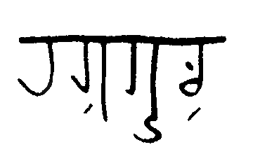 | |
| nutta | 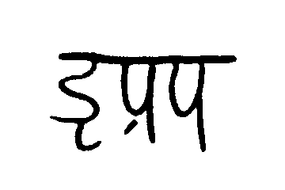 | |
| ṣiṇṇa | 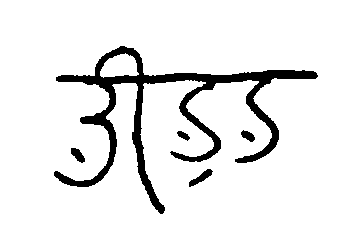 | |
| baukká | 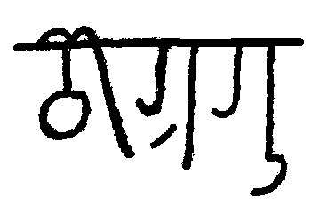 |
バートで語中の閉音節って長子音でしか出ないわけだし、この書き方はなかなか冗長ではなかろうか。（まあ現世でthroughとかQu'est-ce queとか書いたりするときに比べればストレスが少ない方だが。）
ということで、母音字の左下に無母音記号を書くことでこれを短縮表記できる仕様にしたい。
| 伝統表記(非縮約) | 伝統表記(縮約) | |
| rakkúḷ | ||
| nutta | 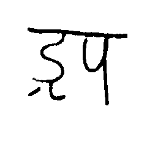 | |
| ṣiṇṇa | 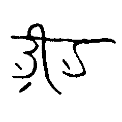 | |
| baukká | 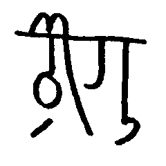 |
問題はaQである。どうしようか。
波線にします。
| 伝統表記(非縮約) | 伝統表記(縮約) | |
| rakkúḷ | 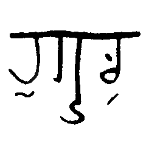 |
で、現代表記ではどうするかというと、当然無子音字にこれらの符号を適用するのだから、aQは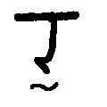、auQは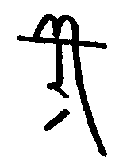、iQは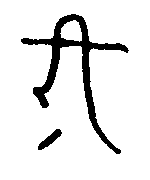でuQは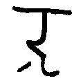。
文法書にも書いてきた。
とりあえず、aQ・iQ・uQ・auQのビットマップを造らなくては。
あと、「バート語について考察する -- バート文字」で出てきたコンマ、引用符と疑問符、及びそれが複合した字も作らねば。
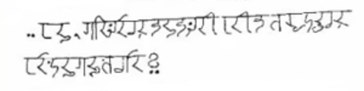ちなみに、疑問符はパイグ文字2声記号に由来するらしい。なるほどなぁ。
とりあえずコンマを実装。
引用符・疑問符・引用疑問符を実装。
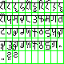 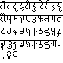せっかくなので例文を。上記に書いた"há, kodhel nánaḍi hína sujúḷ heyákáṣlo?"を書いてみよう。
元画像だと-úḷに（非義務なので）点を打ってないし、ṣが非真理設定の字形だったり後ろに無母音が打たれてなかったりするなぁ。
とりあえずこんなもんでいいでしょ。
aQ・iQ・uQ・auQのビットマップを作り忘れていた。
パイグで感嘆がtだったりするらしい。というのも、内破のなかで一番簡単に書けるからだそうだ。
ということで、Qシリーズは向こうではatとかautとか呼ばれてることにしておこう。
あと、今気づいたがバートってコンマの後にスペース入れないのな。
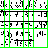 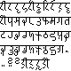作った。ということで前述の二重子音4単語を書いてみよう。
バート文字を描画するときの内部スクリプトをそれなりにきれいにした。
before:
printBhat("quote_h_á_,_k_o_dh_e_l_-_ _n_á_n_ḍ_i_ _h_í_n_ _s_u_j_ú_ḷ_-_ _h_e_y_á_k_á_ṣ_-_l_o_ququ".split("_"));
after:
printBhat2('"há,koDel- nánḍi hín sujúḷ- heyákáṣ-loQ');
33-2.で唇音の後にeが来ないという話をしたが、もうちょい制約が厳しいという説があるので調べてみよう。
| 唇音 | 歯茎音 | そり舌音 | 軟口蓋音 | |||||
| 鼻音 | m | n | ṇ | |||||
| 破裂音 | p | b | t | d | ṭ | ḍ | k | g |
| ph | bh | dh | kh | gh | ||||
| 摩擦音 | w | c | s | ṣ | h | |||
| 接近音 | l | ḷ | ||||||
| ふるえ音 | r | |||||||
| x | z | j | y | ṣl |
| 元からある |
| 私の造語 |
meあるやん。唇音+eの禁則はどこいった。
まあ、これには即座に言い逃れを思いつくことができて、-homáも存在するのでそれと衝突しないように-homeで残ったんでしょうな。ロシア語において、弱化する位置でも格語尾は対立を示すために弱化せず残る、みたいな話があるらしいし。
cとtは[t͡seːpət͡seːpə]の古めの借用由来と見られるcepatepaでしか出てこないし、実質「有声歯茎音・z・ṭ・hの前でのみ立つ」と言えそう。
???「なぜṭの前で立つの？」 j.v「ṭはzみたいなもんだからです」
とはいえ、なんかhuzeúḷは違和感あるんだよな、と思って調べたら-uz-も-úz-も不存在か。じゃあなんかのタイミングで-uz- > -uṭが起きたんだろうなぁ。
まあとりあえず、基本としては「歯茎音かh」という謎規則があることが分かった気がする。あと鼻音も禁則かな。
| 唇音 | 歯茎音 | そり舌音 | 軟口蓋音 | |||||
| 鼻音 | m | n | ṇ | |||||
| 破裂音 | p | b | t | d | ṭ | ḍ | k | g |
| ph | bh | dh | kh | gh | ||||
| 摩擦音 | w | c | s | ṣ | h | |||
| 接近音 | l | ḷ | ||||||
| ふるえ音 | r | |||||||
| x | z | j | y | ṣl |
| 元からある |
| 私の造語 |
鼻音・g・ghは来ないのな。確かにちょっと違和感ある。
-uz-の案件が出てきたので。
| 唇音 | 歯茎音 | そり舌音 | 軟口蓋音 | |||||
| 鼻音 | m | n | ṇ | |||||
| 破裂音 | p | b | tt | d | ṭ | ḍ | k | g |
| ph | bh | dh | kh | gh | ||||
| 摩擦音 | w | c | s | ṣ | h | |||
| 接近音 | l | ḷ | ||||||
| ふるえ音 | r | |||||||
| x | z | j | y | ṣl |
| 元からある |
| 私の造語 |
うーん。
タカンには準体法（「このカバンは誰『の』ですか？」）があるらしい。バートには現状無いが、あっても困らないので作ろう。
と思ったが、格語尾をどうしよう。
形式名詞「k」を立てて、そこに格語尾をつけるしかなさそう。主格はゼロで現れるということで。
「これはあなたのですか？ ko ámaom hem?」「あなたのを使いますか？ ámaom kele sujamúha?」
祖語raikqtがバートでkádになっていることについて、こんな案が提案された。
raikqt → /xeːkəd/ → /keːxad/ → /keːɦad/ → /kæːd/ → kád
cf. raikqt → /xeːkəd/ → /eːkə/ → /eːk/ → ek
要するに、祖語のraiが落ちたのではなく、/xeːkəd/が音位転換したものだという説である。これだとqがáになることの説明も同時につくので善い。
シローレーカー（上の棒）だけつなげて書くことでハイフンの役割ができそう。aṭam-kádとか。
とはいえ、リパラオネ文化圏ならハイフンというよりアンダーバーに対応しそうなアレなので、転写はアンダーバーにするか。ハイフンはprintBhatで既に使用済みだし。
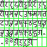 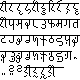こんな感じ。
@sosoBOTpi バート語の他動詞化接辞aだけど、アイル語のAKIと関係があるかもしれない。
— Router(config)# config-register 0x2142 (@sashimiwiki) 2018年1月1日
「させる」か、なるほど。
ちなみに、他動詞化接辞aは1-4-1に出てきたcákíkúḷ「来る、訪れる」→cákíkaúḷ「訪れさせる、もたらす」の接辞のことである。coin.htmlの3-1.で出てきたように、janúḷ「生じる」→janáúḷ「作る」のように-áとして現れることもある。
で、思ったのは、「これってもともと-agh-といった形で、後にghが落ちたのでは？」という説。ṣlのところ(31-2.)で「伝統的な綴り」の存在が示唆されたが、janáúḷはもともとjanaghúḷで、緩衝母音が入る大体の活用でjanagha- > janá- となったのかもしれない。kánaghúḷとかは普通にkánagha-のまま残っているからアレだが。
cákíkaúḷはどんな感じだろうか。*cákíkaghkátá から ghが落ちてcákíkakátá、それが規則化してcákíkaúḷかな。よさそう。kánaghúḷとかは-gh-のほうで規則化したんだろうなぁ。
ということは、使役性他動詞化接辞は-a, -áの他にも-aghで現れたりもしそうだなぁ。
2017年12月25日ぐらいに-ṣloの略記について軽く考えた。確か、私が画面共有しながらお絵かきしてたんじゃなかったかな、そしてS.Yがそれを見ていてコメントしてたはず。
とりあえず、まとまった記事にもなりそうにないし、あれから2週間経ってる(現在2018年1月10日)のでとりあえず載せるだけ載せておこう。
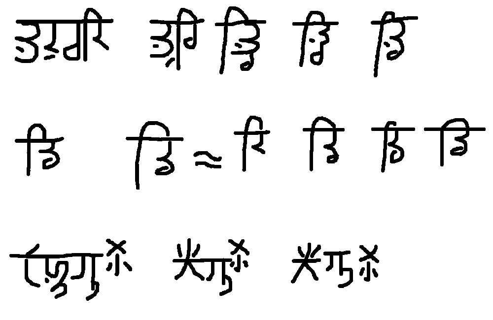次の42-3.を書くための準備として、printBhat2でサイズ調整ができるようにするのと、あと（リパラオネと共通だからって理由で今まで含めてなかったけど）ピリオドを印字できるようにしよう。
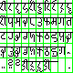書き初めとして、とりあえずアリス第一段落をバート文字で書いた。もちろんカンペ↓を見ながらである。
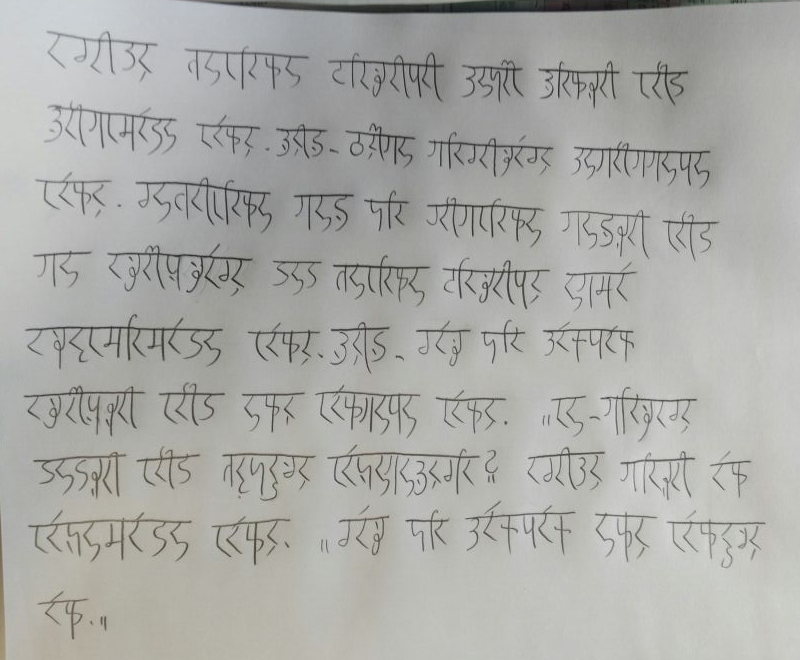さて、よく見ると下から4行目、一番右のkodhelがじゃなくてになっているという。まあ普通にただのミスなのだが、がこの位置に来ることはないことを考えると、「現代表記において手書きとかでたまにこう書かれることがある」みたいにしても面白いかもなぁ。
バート語も、状態動詞の代動詞は存在動詞hemúḷを使う（動作動詞の場合はzúḷ「する」）
— .sozysozbot.@hsjoihs@jekto.vatimeliju (@sosoBOTpi) 2018年1月14日
ん、ホンマか？（動作動詞の場合はzúḷだけど、状態動詞はどうだっけ）
— .sozysozbot.@hsjoihs@jekto.vatimeliju (@sosoBOTpi) 2018年1月15日
ということで、動作動詞の代動詞はzúḷである。これ書いてなかったので書いておこう。実は21-1.のときぐらいにはとっくに決まっていた仕様だったりするのだが。というか「nánadhel zamú! 何をする！!」って例文あったな
「バート音節表（現状）」というものを作ってみたところ、m以外の唇音に関しては後ろにiやíが来ることもないことが分かった。確かに-bhi-という音素列はバートらしくない気がする。
逆に、mについては-mú-が二人称周辺にあるし、そもそもhemúḷもあってか-mú-に違和感がない。ということで-mú-はアリという感じで。
あ、そうそう、これまで書いてきた諸々って「単一形態素内部」の制約なので注意。禁則の-ne-も「ápa aṭamáná manámanelená bhátadhí.」で出てきたりするし、今回のアリスでもdhípeleを許容している。
造語ページに移動
造語ページに移動
バート語ではそういう言い方をしないけど、不定詞を取る動詞についてまとめてみよう。ちなみに(不定詞|[^h伐]ema)で全文検索すると一発。
主格で取る動詞
| 動詞 | 意味 |
| hemúḷ | 〜している（進行相；状態動詞化） |
| huṭeúḷ | 〜し始める（開始相；瞬間動詞化） |
| heyáúḷ | （heyákáṣloで)～だろうか |
| zalloúḷ | 〜すべきである |
不定詞+emaで取る動詞
| 動詞 | 意味 |
| heyáúḷ | 〜を思う・〜について考える |
| rijúḷ | 〜を望む・〜したい（無主語・1人称主語）・〜してほしい（非1人称主語） |
| ṣonáronáúḷ | 〜を不思議に思う |
ちなみに、これ書いてる途中で「emaってだいたい不定詞かkodịを取ってるような」と気づいたので辞書に書いておいた。あと不定詞+emaで「〜なんて」という意味になるのは文末だけなので、それも加筆した。
古タカンについて話していたところ、タカンでpugu「愚かだ」が採用されたので登録。
語幹が単音節（母音が1つ）かつ短音節（長子音を伴わない短母音）の場合の挙動について。え？zúḷ？あれはもはや別枠
^[^aeiouáíú]*[aiu].?úḷ$で検索すると一発で、
という感じである。
こいつらの活用として特徴的な例として
がある。
ちなみに、-júḷで終わる普通の動詞の活用として確認されているのはcánajúḷのcánajazenáぐらいであり、他は不定詞ぐらいでしか登場していない。ということは活用が異なっている可能性もあるんよな。
とりあえず、-íで始まる名詞化第三接尾辞・名詞化第四接尾辞は短動詞でなくとも-j-なら母音幹扱いでいいんじゃないかなぁ。一方cánajzは違和感があってcánajazであるべきなので、-zの振る舞いに関しては-j-短動詞は特殊かと。
まあこんな感じか。
| 母音語幹 | j語幹 | 子音語幹 | 具体例 | |
| 名詞化第一接尾辞 | -z | -az | heyáúḷ「思う、考える」 → heyáz「思考」 | |
| 名詞化第二接尾辞 | （かつて存在したが今は痕跡的にしか残っていない） | |||
| 名詞化第三接尾辞 | -ḍíṣ | -íṣ | zíghúḷ「整然としている、規則的である」 → zíghíṣ「時計」 | |
| 名詞化第四接尾辞 | -hí | -í | nádítúḷ「眠い」→ nádítí「眠さ」 | |
| 名詞化第五接尾辞 | -káta | -akáta | zeúḷ「巻く」→zekáta「腰巻き」 | |
sujakátáとかは微妙に違和感が無くもないが、bházahakátáの後半部分とリズムが同じだし、まあそこまで問題はなさそう。それよりは規則化意識の方が強く働きそう。
-zについては、音節としてsujが立てないのでsúzかなぁ。súzemと同様である。
あれか、「後述する形態素に含まれる母音が1つ以下で短母音である場合は母音語幹判定」とすればいいのか。
| heyáúḷ | hemúḷ | cánajúḷ | cajúḷ | rijúḷ | sujúḷ | |
| -úḷ / -úḷ | heyá-úḷ | hem-úḷ | cánaj-úḷ | caj-úḷ | rij-úḷ | suj-úḷ |
| -mú / -amú | heyá-mú | hem-amú | cánaj-amú | caj-amú | rij-amú | suj-amú |
| -ma / -ama | heyá-ma | hem-ama | cánaj-ama | caj-ma | rij-ma | sú-ma |
| -z / -az | heyá-z | hem-az | cánaj-az | caj-z | rij-z | sú-z |
| -∅ ~ -zem / -∅ | heyá-∅ | hem-∅ | cánaj-∅ | caj-zem | rij-zem | sú-zem |
cajúḷにも-zemを付けることにした。現状の説明だと「sujúḷのように、a以外の母音にjが後続している語幹末の場合、例外的に語幹を長音化して接尾辞-zemを付ける。sujúḷならsúzemである。」ってなっているけど、例えば（コロコロ）sánujúḷという動詞があったとして、これの命令がsánúかsánúzemかと聞かれれば自明にsánúなので、接尾辞-zemの役割は-jというよりも開音節単音節命令形の強調という感じがする。確かに、zeúḷの命令形は（zeでもよさそうだが）zezemの方がしっくり来る。
ただ、その場合suúḷはどうなるだろう？数分考えたところ、長母音+ -zemのeを/ɛː/じゃなくて/ɛ/で読んでいることに気づいたので、sujúḷはsúzem /zuːtʃɛm/、suúlはsuzem /zutʃɛːm/と読む、とすればよさそう。
はい。（はい。）
藍cikauがṣíkahúḷ、藍bwoxouがbhoṣahúḷになるのは、/auV/ → /awV/ → /aβV/ → /axV/ とか /ouV/ → /əuV/ → /əβV/ → /əxV/ というふうに説明していて、だからこそ命令形が-auなんだけど、zúḷも祖語がzauだし同系統なのではなかろうか。
つまり、
| zúḷ | cajúḷ | rijúḷ | sujúḷ |
| z-úḷ | caj-úḷ | rij-úḷ | suj-úḷ |
| z-amú | caj-amú | rij-amú | suj-amú |
| zau-ma | caj-ma | rij-ma | sú-ma |
| zau-z | caj-z | rij-z | sú-z |
| zau-zem | caj-zem | rij-zem | sú-zem |
これならコーパス（zamú）とも合うし、よさそう。
Eat your own dogfoodという格言もあるので、バート語のsnojファイルを書いて発音を綴りから自動生成できるようにした。
rijúḷに状態動詞を追加、ghíyoに祖語*kyooを追加。
「なんでríkahomá káṇaḍi hínaって単数形なの？」というkpht氏からのツッコミを食らった。引き継ぎ前からあった例文なのでjekto.vatimelijuは悪くないのだが、放置するわけにも行かないし「成句」とすることにした。
というか、「複数形」の定義も考えねばな。リパライン語でledydを複数形にして「手が50本くらいありそうに聞こえる。」と言われたこともあったし。
例文を足すようにしてみた。とりあえずアリスを載せた。
ḍázの祖語形がdkoopという説があるが、なんか怪しいので語源不明にしておく。というかḍṭṇḷが語頭に立つ例がこいつしかないんだよなぁ。
cákíkúḷに-akátaがついたらcákíkakátaのはずなのだが、辞書にもcákíkátaで載せているし、意味用法がcákíkúḷからかなりずれていることもあるし、そのまま採用としよう。
emaは「〜のように」という後置詞として解説されているが、実際の用例を見ると、heyáúḷだとṣonaronaúḷだのの対格に不定詞を取りたいときに、不定詞の対格が存在しないのでそれを補充する形として使われている例しか見かけない。しかも最近はácahúḷ「〜(主格)には〜(対格/不定詞+ema)ができる」などという造語もしている。完全に対格と互換性あるやん。
まあ、そんなことになったのは、"kodhel ṣonáronáúḷ" とか "dheseúḷ ema ṣonáronázená" とかがアリスで導入されたからなんだけど、近頃はかなりこの互換性が生産的になっている印象があるので、もう語釈を「〜を」にしていいんじゃなかろうか。「〜について」も良さそうだけど、rijúḷを考えると「〜を」の方がキレイな気がする。「〜を」でいいでしょ。
datの品詞名を「添詞」に確定。それとともに辞書に収録。祖語はtqtq説を立てる。
こいつらの接中辞（というか語幹につく接辞）を登録していなかったので登録する。
ríkahomá káṇaḍi hína、なんでなんだろうなぁ。
他にも、「ríkahoma káṇadi hína」は何故2なのに単数なのか、とkpht氏に突っ込まれて、「実はあれ『単数』ではなく『単数or双数』なのでは？」という説が出ている。基本的に作者移行前の作文に全部辻褄が合うように創作を進める方針なので
— .sozysozbot.@hsjoihs@jekto.vatimeliju (@sosoBOTpi) 2018年3月15日
なるほどなあ
— Fafs F. Sashimi@3/1よりガチtourist (@sashimiwiki) 2018年3月15日
今まで複数使ってる例、たしか全部3つ以上なんよね。ákíjamán dhoḷopáná ṣibhaiomá dháradも3つの連合だし
— .sozysozbot.@hsjoihs@jekto.vatimeliju (@sosoBOTpi) 2018年3月15日
面白い
— Fafs F. Sashimi@3/1よりガチtourist (@sashimiwiki) 2018年3月15日
もう一つの説としては、あれは「単数と複数」ではなく（リパライン語と同様）「原形と複数形」である、というもの。古理だとどうなんだっけ？（ナデューにも絡むかも）
— .sozysozbot.@hsjoihs@jekto.vatimeliju (@sosoBOTpi) 2018年3月15日
古理よく覚えてない……コーパス確認すべきかな。
— Fafs F. Sashimi@3/1よりガチtourist (@sashimiwiki) 2018年3月15日
なるほど、まあ帰国後にでもゆったり考察しよう（今は「j.vがかぱはたに物理を教える」→「かぱはたがそれをユーゴック語でまとめる」→「受験勉強と創作の進捗が同時に生える！」計画とかをやっている）
— .sozysozbot.@hsjoihs@jekto.vatimeliju (@sosoBOTpi) 2018年3月15日
一応、有り得そうな説を列挙しておくと
— .sozysozbot.@hsjoihs@jekto.vatimeliju (@sosoBOTpi) 2018年3月15日
・単数=双数≠複数（そっちに合流する例ってあるんですかね）
・ríkahoma káṇadi hínaは成句（成句だからって規則破るか？）
・数詞の後は単数（cf. ロシア語）
・複数形の標示は非義務的（cf. https://t.co/gHBHreYAt4）
・原形と複数形（ledydissは手が50本）
辞書では今まで成句説を取っていたが、もっとちゃんと考察したいのでとりあえずは「謎」と書いておこう。
上記の説に番号を振るなら、
1.については、類型論的に見ても、双数が消える時は複数に合流するのが圧倒的に主流っぽいので、如何なもんかなぁという思いがある。
2.は、まあそのまんま「成句だからって規則破るか？」という。
3.。まあロシア語のあれは双数主格が単数属格に合流したものだけど。ちなみにブルガリア語とマケドニア語では「数詞の後では全て双数形由来の形を使う。"count form"や"quantitative plural"として再解釈されている」とのことである。へー。
4.は、なんかWorld Atlas of Language Structuresを見てみたところ、
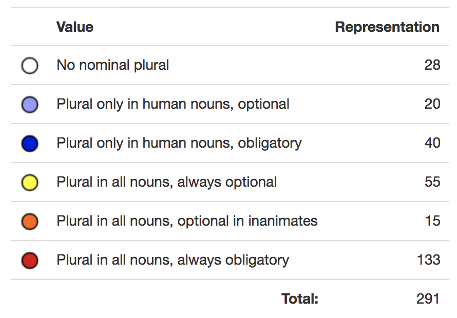だそうで、アフリカとかヨーロッパはだいたいAll nouns, always obligatoryだけど、All nouns, always optionalな言語もそれなりにあるので良さそう。
5.。リパライン語はあれ「単数・複数」じゃなくて、「-ss【語尾辞】名詞の物体の数が多いことをあらわす」という接辞だからなぁ。grammatical numberはリパライン語には不存在で、-ssは多数性を表す接辞と見るべきっぽい。
-ssの付いた形態は複数形 eustiraと言うけど、リパライン語では元の語形は単数形 fanklavoloではないので原形 xinirftleという。#lipayuna
— Fafs F. Sashimi@3/1よりガチtourist (@sashimiwiki) 2017年9月22日
そもそも、リパラオネ・ラネーメ全般として文法的数ってほとんど見られないからなぁ。アイル語の「複数形」はreduplicationらしいし。
語の複数形は語を二回言うことで表現できる。Lkurftless'd ai'r - リパライン倉庫
今知ったけど、インドネシア語は複数形がreduplicationだけど、数詞が来たりして "when the context is clear and when the plurality is not emphasized" なときはreduplicationを行わないらしい。なるほど、こういう3.もあるのか
アイル語の「複数形」ってどれくらい義務度が高いんだろう。ちょっと文献を調べてみるか。バート語では複数形を用いる「東諸島共和国連合」はアイル語では"Akiama sauir sakika mapijumi"だそうだ。reduplicationが見られないが。
えーとglossにすると、
akia-ma sau-ir sakika mapiju-mi
太陽-他格 上-PRS 来る ???-自格
東諸島共和国連合
よく分からんが、とりあえずreduplicationが発生していないのは確かである。いせにほで出てきたアイル語でもreduplicationが出てきた記憶がない。となると、この「複数形」の義務度は低めで、eustiraのように「多数性を示す接辞」程度の役割しかないのではなかろうか。朝鮮語-들とかもたしかそんな感じじゃなかったっけ？
-들で調べてみたらgeneral numberというフレーズが出てきた。リンクを踏んだところ、
Many languages, such as Chinese, Indonesian, Japanese and Malay, have optional number marking. In such cases, an unmarked noun is neither singular nor plural, but rather ambiguous as to number. This is called transnumeral or sometimes general number, abbreviated TRN. Many such languages have optional number marking, which tends to be used for definite and highly animate referents, most notably first-person pronouns.Wikipedia contributors, "Grammatical number," Wikipedia, The Free Encyclopedia, https://en.wikipedia.org/w/index.php?title=Grammatical_number&oldid=829700222 (accessed March 15, 2018).
とのことである。
ちなみに、タカン語には『複数』接辞iが存在して、optionalである。やっぱりtransnumeralじゃないか。
東島通商語もtransnumeralで、理set由来のcetを後置して多数性を表せるようだ。